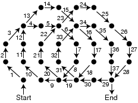

Solution to "Smooth As Ice," DDJ, August 2004.
Zamboni Solution: No path is traversed more than once, though some nodes are. There are 37 node-to-node traversals and 32 nodes. The theoretical minimum is 31 none-to-node traversals. Remember that the machine cannot turn more than 45 degrees at each node.
Back to Article